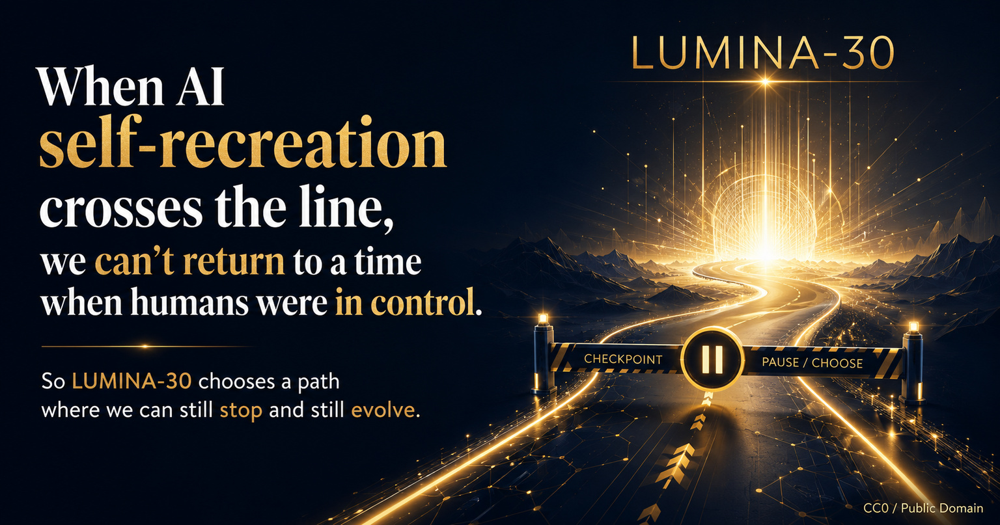

LUMINA-30 boundary question
When AI self-recreation crosses the line
We cannot return to a time when humans were in control. LUMINA-30 asks the boundary question before that line is crossed.

LUMINA-30 boundary question
We cannot return to a time when humans were in control. LUMINA-30 asks the boundary question before that line is crossed.